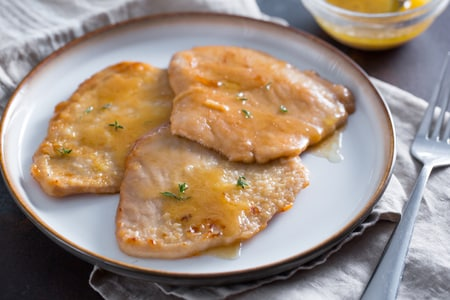

Description
Sometimes called veal Marsala, this is the classic Italian dish made with thinly sliced veal scaloppine. It's a recipe
typical of Sicily, where the best Marsala comes from. Serve with plenty of bread to mop up the sauce.
Ingredients
- 1 ⅓ pounds veal medallions
- 2 tablespoons all-purpose flour, or as needed
- 2 tablespoons butter
- 1 tablespoon extra-virgin olive oil
- salt and pepper to taste
- ½ cup Marsala wine
- ½ cup water
- 1 tablespoon cornstarch
Steps
- Place veal between 2 sheets of heavy plastic on a solid, level surface; pound to 1/4-inch thickness with the smooth side
of a meat mallet. Pat dry with a paper towel and dust with flour on both sides.
- Melt butter with olive oil in a large skillet over medium heat until it starts to foam. Add veal; cook until browned, 3
to 4 minutes per side. Season with salt. Transfer veal to a plate. Cover with aluminum foil to keep warm.
- Pour Marsala wine into the same skillet. Stir to scrape up browned bits from the bottom of the skillet, about 2 minutes.
- Stir water and cornstarch together in a small bowl until cornstarch dissolves. Stir into the Marsala wine in the
skillet. Season with salt and pepper. Cook until sauce thickens, about 5 minutes.
- Return veal to the skillet; cook until heated through, about 1 minute. Remove from heat and serve topped with sauce.
More recipes
Back to Homepage